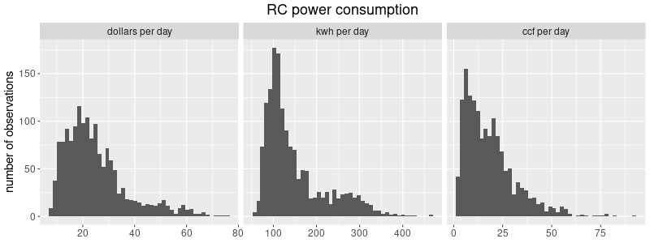
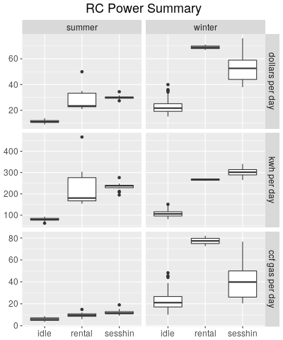
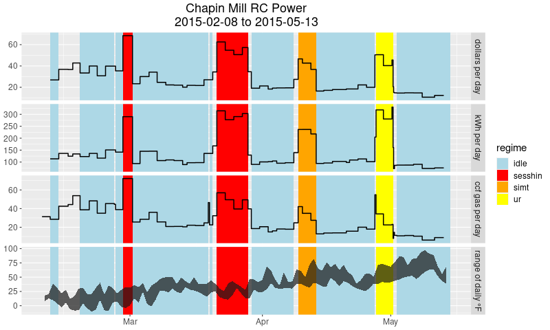

Chapin Mill Energy
Energy Comparisons
Energy Consumption and Weather
The plot below describes outdoor air temperatures and the rate of retreat center energy consumption for the past few months. These data come from
- the Ensemble HVAC system,
- the National Oceanic and Atmospheric Administration (NOAA) and
- the gas and electric meters.
Ensemble samples the outdoor air temperature several times per hour and NOAA provides historical maximum and minimum daily temperatures for Batavia. After comparing the two it became obvious that Ensemble was providing readings that were predictably higher than reasonable for very cold days. This is almost certainly because the Chapin Mill thermistor is too close to the kitchen which is usually much warmer than the rest of the retreat center. I fit a statistical model to the two sets of temperatures—Ensemble and NOAA—and used the results to adjust the Ensemble readings so that they were more realistic. Then I determined the daily min and max readings and plotted the range over time.
Gas values are in hundreds of cubic feet per day and electricity values are in killowatt hours per day. (So I guess that makes the units for electricity 1000/24 ≈ 42 watts.) Using historical billing data we can estimate the price of gas and electricity and so can convert the two types to dollars and add them up. Thus one of the panels in the plot describes the rate of overall cost of energy consumption.

Before modeling the data in a more formal way it might be useful to consider simple summaries. Over the last few years I have been noting the power consumption for the retreat center for both gas and electricity approximately every two days. The plot below describes the distribution of these observations—and the derived dollar cost—over all times of the year and over all events.

To be slightly more precise, 95% of the time the observed
electricity power consumption was less than 310
kWh per day, gas consumption was less than
48 hundred cubic feet per day and the
overall energy cost was less than 54 dollars per
day.
It is also possible to compare the rates of retreat center energy consumption for different users and different seasons. If we restrict ourselves to time periods from February 2015 through June 2017 during which the center was hosting either a sesshin, a rental, or absolutely nothing, and then plot the meter readings we get the figure below. (Here "rental" implies just the two outside organizations described in the following paragraphs, namely the Toronto and UR groups. Also, winter is November, December, January, February, and March and summer is June, July, and August.) The plot summarizes—for each combination of occupancy/season—the distribution of power values observed for both natural gas and electricity, and the derived dollar values. Each such combination has a heavy horizontal line corresponding to the median, an enclosing box describing the middle 50 percent, and whiskers extending out to the extreme values. For example, the upper right-hand figure tells us that during a winter sesshin the center is burning up gas and electricity at an average rate of a little over 50 dollars per day, and that half of the observed readings are within 45 and 60 dollars.

In order to study the dependence of gas consumption on outdoor temperature more particularly I looked at the time period from early February 2015 to early May 2015. The plot corresponding to that period is below. During that time span there were several different types of events including
- Rochester Zen Center sesshins,
- a Satipaññā Insight Meditation Toronto (simt) retreat and
- a University of Rochester MBSR (ur) retreat.
The plot assigns different colors to these different periods. Most of the time that fell outside of scheduled events qualifies as idle, meaning that there was no activity going on aside from that required to maintain a minimal crew. (The uncolored non-idle times were those for which some extra energy consumption was going on. For example the cold room may have been running or the zendo may have been heated for sesshin setup.)

If you look carefully at the above plots you may notice—as you would expect—that gas consumption decreases as it gets warmer outside. The next figure is a scatterplot of idle gas usage versus average outside air temperature for the period from February 2015 through July 2015. That is, any given gas value is the rate at which we used gas over a two-day period and the corresponding temperature value is the average of the temperature readings over that period.

A possible elaboration of this report might consider electricity consumption for the summer months as opposed to winter months as well. However, right now it looks overwhelmingly likely to me that the results would not be very interesting.
Natural gas
For a given level of occupancy of the retreat center it would be natural to consider gas consumption as consisting of two parts:
- a base rate that doesn't change significantly from day to day, and
- an additional rate that scales with the outdoor temperature. (The colder it gets the greater this part.)
In what follows I have assumed that the average base rate is common among all the different retreat center occupants but not the scaling factor that applies to outdoor temperature. This might not be valid if there were reason to think that different occupants stressed the heating system differently independently of how cold it was outside. For example, if one group took more hot showers than another or ran the dishwasher or clothes washers and driers more often. But in light of the magnitude of the effects described below it seemed likely to me that these possible differences would not be important.
The data support a fairly good estimate of the base rate and very robust estimates of the outdoor temperature scaling factors. These scaling factors relate gas consumption in ccf (100s of cubic feet) per day to degrees Fahrenheit. 95% confidence intervals are
| min | max | |
| IdleScale | 0.48 | 0.65 |
| SesshinScale | 1.05 | 1.28 |
| SimtScale | 1.33 | 1.99 |
| UrScale | 1.32 | 2.23 |
Roughly speaking these imply that the incremental consumption
associated with a 1 degree drop in outside air temperature is
normally 0.57 ccf per day. During sesshin
this increases by 105 percent to
1.16 ccf per day and during a SIMT retreat it
increases by 193 percent to
1.66 ccf per day. (The UR gas consumption is
essentially the same as that for SIMT.)
Historically the price per ccf of natural gas for Chapin Mill is
55 cents. Altogether the scales and base rate
tell us that if the average outside air temperature is say 25
degrees Fahrenheit then the amount spent on gas per day during
idle, sesshin and SIMT/UR periods would be around
15,
28, and
39
dollars respectively.
The plot below describes both observed and predicted gas consumption for the study period. As before in the raw data plot the units are thousands of cubic feet per day. (There are only predictions for times that are either idle, sesshin, SIMT or UR.)

Electricity
For the period under consideration electricity usage did not vary with outside air temperature in a significant way. The data only established separate estimates of electricity consumption in kWh per day for idle and occupied periods.
| min | max | |
| Idle | 101.03 | 114.38 |
| Sesshin | 277.78 | 312.61 |
| SIMT | 207.83 | 252.79 |
| UR | 287.25 | 332.21 |
On average the retreat center consumes 108 kWh per
day outside sesshin. During sesshin this increases by
174 percent to 295 kWh per day
and during a SIMT retreat the corresponding increase is
114 percent to 230 kWh
per day. (The UR electricity consumption is only slightly above
that for sesshin.)
Assuming that the average price of electricity for Chapin Mill is
10 cents per killowatt hour the amount spent
on electricity per day during idle, sesshin/UR and SIMT periods is
about
11,
30, and
23
dollars respectively.
Details
The natural gas model is \[ y = \alpha_0 + \left\{\begin{array}{ll} \alpha_1x + \epsilon & \mbox{for idle periods} \\ \alpha_2x + \epsilon & \mbox{for sesshin periods} \\ \alpha_3x + \epsilon & \mbox{for SIMT periods} \\ \alpha_4x + \epsilon & \mbox{for UR periods} \end{array} \right. \]
Here, \(y\) is the rate of gas consumption in hundreds of cubic feet per day, \(x\) is average negative temperature in degrees Fahrenheit (described below), and \(\epsilon\) is the normally distributed error.
The observations/experimental units used to build the model are usually periods of around two days which corresponds to the frequency with which I noted gas and electricity consumption. Because Ensemble samples the temperature about every 15 minutes a period can include on the order of 200 different temperature readings. If \(t_1, t_2, \ldots, t_n\) are the temperature readings for a period then for \(i = 1,2,\ldots,n-1\) let \[ t^*_i = (t_{i+1}+t_i)/2, \] let \(h_i\) be the length of time between readings \(i\) and \(i+1\), and finally let \[ x = \frac{\sum_1^{n-1} h_i(65-t^*_i)_+}{\sum_1^{n-1} h_i} \] where the notation \((w)_+\) means that \((w)_+ = \max(0,w)\). Thus \(x\) is the average degrees below 65 for the period, or in other words, \(x\) is the average degree-days per day.
The α parameter estimates and their standard errors look as follows:
| Estimate | Std. Error | t value | Pr( |
| t | ) |
| α0 | 5.53 | 1.46 | 3.79 | 0.00 |
| α1 | 0.57 | 0.04 | 13.17 | 0.00 |
| α2 | 1.16 | 0.06 | 20.42 | 0.00 |
| α3 | 1.66 | 0.17 | 9.90 | 0.00 |
| α4 | 1.77 | 0.23 | 7.61 | 0.00 |
Similarly the electricity model is \[ y = \left\{\begin{array}{ll} \beta_1 + \epsilon & \mbox{for idle periods} \\ \beta_2 + \epsilon & \mbox{for sesshin periods} \\ \beta_3 + \epsilon & \mbox{for SIMT periods} \\ \beta_4 + \epsilon & \mbox{for UR periods} \end{array} \right. \] where \(y\) is electricity consumption in kWh per day and the \(\epsilon\) are error. The estimates and errors are:
| Estimate | Std. Error | t value | Pr( |
| t | ) |
| β1 | 107.70 | 3.41 | 31.61 | 0.00 |
| β2 | 295.20 | 8.88 | 33.23 | 0.00 |
| β3 | 230.31 | 11.47 | 20.08 | 0.00 |
| β4 | 309.73 | 11.47 | 27.00 | 0.00 |